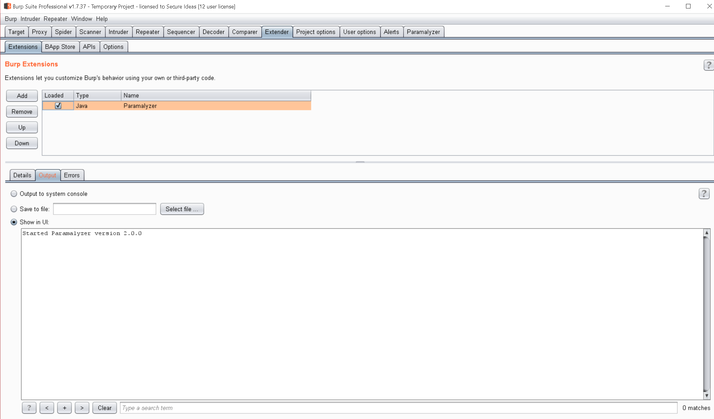

Paramalyzer Overview¶
Paramalyzer is a Burp Suite extension authored by Jason Gillam of Secure Ideas. The source code is available on github.
Important: You must have Burp Suite installed in order to use this tool!
What does it do?¶
The purpose of this extension is to improve efficiency of manual parameter analysis for web penetration tests of either complex or numerous applications. This can assist in tasks such as identifying sensitive data, identifying hash algorithms, decoding parameters, and determining which parameters are reflected in the response.
As of version 2.0, this extension also helps specifically with certain aspects of session cookies, which can help a penetration tester find certain types of authentication and authorization flaws.
Installation¶
Paramalyzer is available in the Burp Suite BApp Store; however, the version in the store may be behind the latest release.
You can find the latest release as a downloadable .jar file under GitHub Paramalyzer releases.
Download it and then in the Burp Extender tab, press the Add button, find and select the downloaded
.jar file. The resulting screen should look something like the following screenshot:

Notice the addition of the Paramalyzer tab on the far right of the main tab pane.
Basic Usage Tips¶
When using Paramalyzer, it is important to understand that you must start with good baseline data. The following tips will help:
- Paramalyzer analyzes your proxy history. Therefore, you must manually visit all the functionality in the application in your browser while pointed at your Burp Suite proxy. This is the best-practice for manual penetration tests anyway, as you must understand how the application works in order accurately identify vulnerabilities.
- Avoid sending attack traffic while gathering baseline data. Doing so will pollute your logs and may yield confusing analysis output.
- Map out the entire application from both an unauthenticated and authenticated user perspective.
- Log in as a second user account, if possible, and revisit any sensitive functionality to capture a second set of cookies.
- Log out and back in with the same user account. Capture proxy history for all user functions (i.e. login, logout, forgot password, registration, change password, change profile, etc...)
- If applicable, visit the site in different roles (e.g. regular use, admin user).
- The goal of all of this is to produce a solid baseline of the application's inputs for Paramalyzer to process.
Once you have completed the basic mapping, you can then move on to using Paramalyzer's tools, found on the main set of tabs in the extension:
- Parameters: Analysis of in-scope parameters.
- Secrets: Look for sensitive information leakage.
- Cookies: High-level analysis of cookies found in the proxy history.
- Sessions: In-depth analysis of session cookies and headers for a given request.